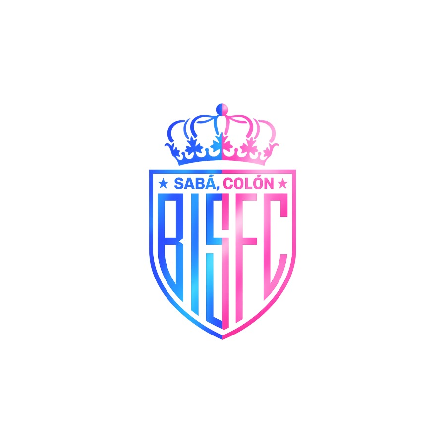

24 de julio de 2026
COMUNICADO OFICIAL
BIS F.C. en ambas categorías Masculino y Femenino, informa que actualmente hemos alcanzado 40 jugadores entre hombre y mujeres inscritos(as) en nuestros equipos. Fortaleciendo y aumentando la actividad deportiva en nuestro municipio, generando una recreación positiva, y movilizando gran afluencia de espectadores en partidos oficiales. Aumentamos y somos uno de los equipos con más jugadores a nivel regional en fútbol rápido. Pronto compartiremos nuestra agenda semanal.